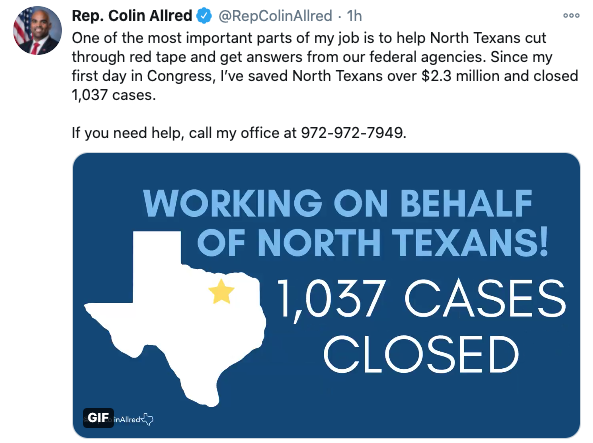
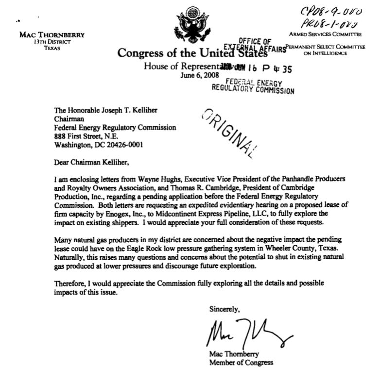
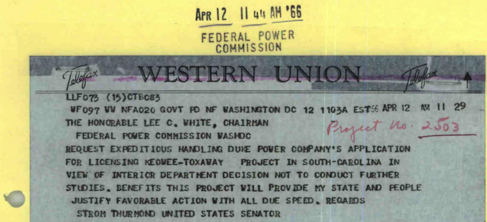
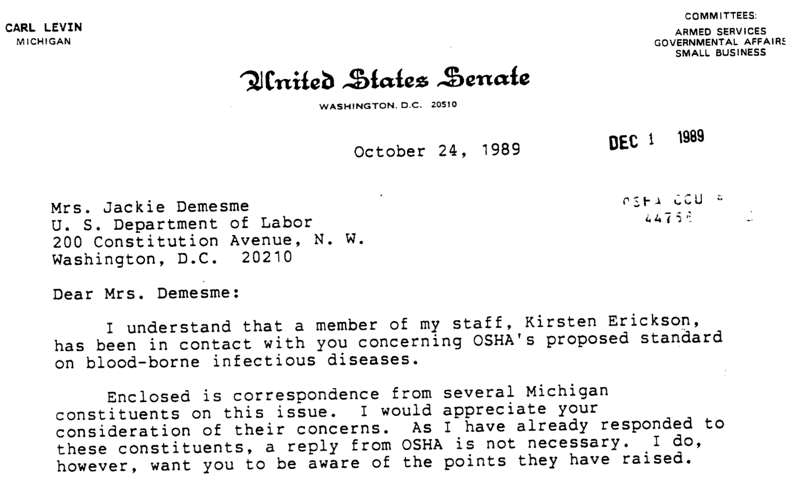
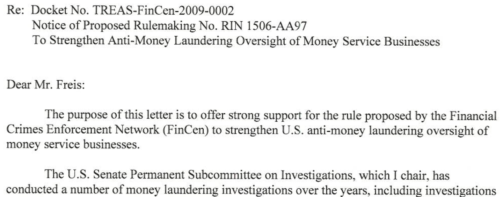
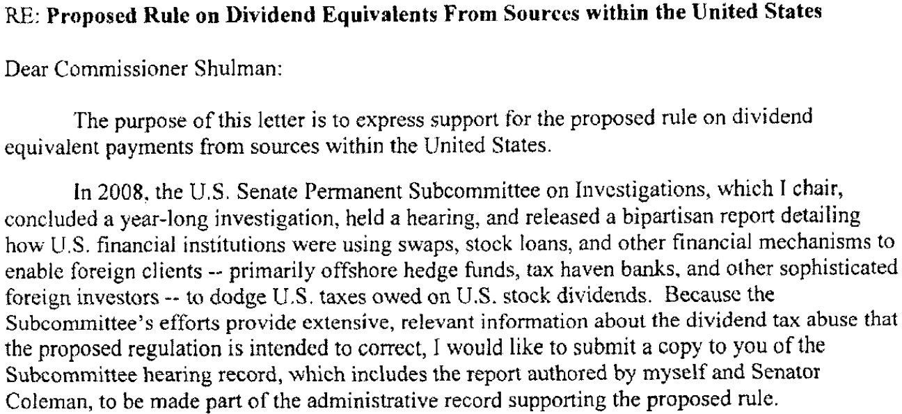
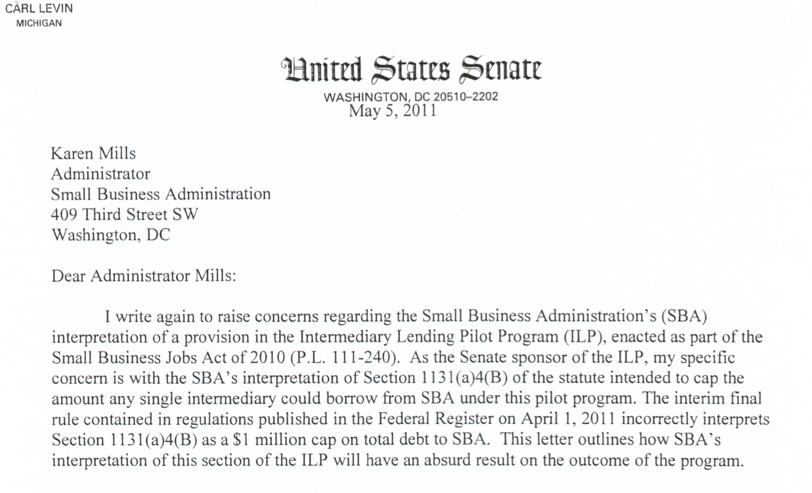
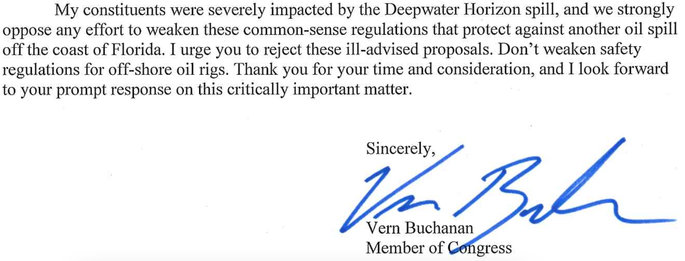

3 The Concept of Interbranch Representation
ABSTRACT: We have argued that interbranch representation varies along two dimensions—who is represented and how. This chapter shows what interbranch representation on behalf of different constituencies—individuals, businesses, nonprofits, and local governments—looks like. First we look at particularized service (“casework”) on behalf of each of these constituencies. Then we show what policy work looks like. Often casework and policy work are linked, with casework informing policy work.
In Chapter 2, we argued that interbranch representation varies along two dimensions: whom legislators represent and how they represent them. This chapter shows what these two dimensions look like in practice. Drawing on the letters and correspondence logs we obtained from federal agencies (described in Chapter 4) along with a handful of archival records, we illustrate each of our five types of interbranch representation. Our goal here is not to measure how common each type is or how much variation there is across members in interbranch representation; we save that for Chapter 4. Instead, we examine what each type involves, where the boundaries between types blur, and how they connect.
We begin with constituency service, considering, in turn, individual constituency service, corporate service, and nonprofit and local government service. We then turn to two types of policy work: (1) general policy work, which ranges from coordination before legislation is passed to oversight and agency rulemaking, and (2) corporate policy work on behalf of businesses and industries. One theme which we develop in Section 3.4, and return to in Chapter 8, is that casework can inform policy work. For example, multiple constituents seeking assistance with similar issues can signal to legislators that a problem exists. Once aware of the problem, legislators can then pursue broader solutions through interbranch policy work or legislation.
3.1 Individual Constituency Service
An individual complaint or request for a favor may itself be trivial, except to the aggrieved or hopeful citizen and his family. Responding to it may tax the energy and ingenuity of an overworked member of Congress and his staff. No single request left unheeded is likely to rock the Republic. But the provision of millions of such minuscule services, in their totality, amounts to a major function of modern American government. How well these services are performed goes a long way in determining the confidence of citizens in their representatives.
— Olson (1966), pg. 338.
Olson’s quote about constituency service speaks to the importance of constituency service for the individuals it helps, as well as connecting how, in the aggregate, legislators’ successfully helping their constituents navigate problems with the federal government can help instill confidence in their elected representatives. Constituency service is also important for members of Congress in a number of ways, including as a major component of interbranch representation. Legislators perform a variety of tasks to help and serve individual constituents (Blackwood 2026), and the difference between a constituent request for assistance and a constituent communication about policy is not always clear (Snyder 2024). Because we are concerned with how legislators engage with federal agencies on behalf of constituents, we use a definition of individual constituency service that is distinct from definitions used in other studies. We conceptualize individual constituency service as actions that congressional offices have taken on behalf of individual constituents to help them navigate the federal bureaucracy, including groups of individuals and large numbers of people.1 As in the post by Rep. Colin Allred in Figure 3.1, this assistance often involves returning money to constituents from the federal government by correcting errors in benefits payments or tax refunds.
More generally, casework often involves help with paperwork, either because the forms themselves impose administrative burdens (Herd and Moynihan 2019) or because bureaucratic processes or laws are a poor fit for a constituent’s circumstances. Legislators view individual constituency service as important enough to devote substantial resources to it; by one estimate, about 40% of congressional office staff work on constituency service (Crosson et al. 2021), a topic we return to in Chapter 6. Legislators also regularly publicize their casework to constituents in newsletters and social media posts, as Representative Allred’s post in Figure 3.1 illustrates.
Many of the most common requests that legislators make to agencies on behalf of individuals go to the Department of Labor (DOL). Several different DOL sub-agencies, including the Occupational Safety and Health Administration (OSHA), the Office of Workers’ Compensation Programs (OWCP), and the Office of Congressional and Intergovernmental Affairs (OCIA), handle congressional requests involving on-the-job injuries, benefits claims, and workplace safety complaints. Also unsurprising is the number of communications with the Internal Revenue Service (IRS) in the Treasury Department on behalf of constituents dealing with issues involving their taxes, especially tax refunds. Hundreds of thousands of individual constituency service requests involve immigration issues with U.S. Citizenship and Immigration Services (USCIS) within the Department of Homeland Security.
Beyond these “classic” examples of individual constituency service, there are also many examples of correspondence on behalf of individuals that did not involve a problem with the federal bureaucracy (at least not in the sense that the bureaucracy had made an error or the constituent had experienced some injustice). The National Archives and Records Administration (NARA), for example, received thousands of requests from legislators on behalf of constituents who were seeking copies of their family members’ military records. While NARA was instrumental in completing these requests because they held the records, constituents were not making these requests of their members of Congress because they had encountered a problem with NARA.
Many legislators also forwarded unusual constituent complaints and queries to the Food and Drug Administration (FDA) within the Department of Health and Human Services. Although these concerns were broadly related to the policy work of the FDA, they often did not suggest a specific bureaucratic failure on the part of the agency. For example, Senator Arlen Specter wrote to the FDA with a request to investigate the treatment that a constituent received at a VA hospital. The constituent had an adverse reaction to a drug that included joint pain, memory loss, sleep apnea, vision loss, and stomach difficulties. The symptoms abated after the patient stopped taking the drug, at the behest of the VA physician. At issue in this case was the drug, not the VA, as the physician seemed to recognize and respond to the problem. And although the FDA had the ability to investigate the issue, the constituent was not contacting Specter about a particular bureaucratic issue with the FDA. This example illustrates how problems can sometimes appear for constituents at the intersection of several agencies, which suggests that the expertise and capacity of legislators’ offices matters for addressing these issues. Congressional staff need to have some sense of how contacting an agency may help to address a problem in a way that is appropriate for the constituent, and these ambiguous cases likely require deep knowledge of the federal bureaucracy. It is also an example of how casework has the potential to inform policy, given the strong implication that a change in policy by the FDA could prevent this problem from occurring for other constituents.
3.2 Corporate Service
Businesses, like individuals, are constantly encountering the federal bureaucracy: they apply for permits, licenses, grants, loans, and contracts; hire workers who need visas; pay taxes; and face inspections and fines. When these things get stuck in the dreaded “red tape” of government, or when things go wrong, business owners, too, turn to their elected representatives for help. We call this form of interbranch representation corporate service: constituency service in which the legislator advocates on behalf of a business, including business owners like farmers. This work on behalf of individual businesses (or business owners) is often on behalf of businesses in the legislators’ districts, but it is not necessarily geographically delimited. For example, legislators could be advocating on behalf of out-of-district campaign donors.
These corporate constituency service requests span a range of issues and agencies. A common form of request is asking an agency to expedite something—in essence, to speed up whatever it is they are doing. For example, Figure 3.2 below shows a letter Rep. Mac Thornberry (R-TX13) wrote to the Federal Energy Regulatory Commission (FERC) in 2013 on behalf of the Vice President of the Panhandle Producers and Royalty Owners Association and the President of Cambridge Production, Inc. In the letter, Rep. Thornberry urges FERC to speed up its decision-making process, and he includes letters from the named corporate leaders explaining their request.

In addition to contracts and permits, the federal government distributes grants to businesses. For example, within the Department of Commerce, the National Institute of Standards and Technology Advanced Technology Program distributes grants to stimulate early-stage technology development that would otherwise not be funded. In 2007, Senator Joe Biden (D-DE) asked NIST “to extend support for Athena Biotechnologies Inc.’s application in the amount of $2 million to the Advanced Technologies Program grant.” Rep. Jack Kingston (R-GA1) wrote “in support of the application submitted by American Process, Inc. and the Georgia Institute of Technology.” Both of these were assigned NIST’s highest priority level in their correspondence tracking system.
Members of Congress make thousands of such interventions every year. Because its mission is to support small businesses, the Small Business Administration (SBA) is a natural destination for these requests. Legislators sent the SBA thousands of letters helping businesses gain access to capital, government contracts, and loans, including disaster loans and disaster loan forgiveness.2 Legislators also wrote on behalf of constituents seeking help with the 8(a) Business Development Program, which supports business owners who are presumed to be socially disadvantaged, including Black Americans, Hispanic Americans, Native Americans, and Asian Americans.
Requests on behalf of small businesses appeared in many other agencies as well, including requests on behalf of Service-Disabled Veteran-Owned Small Businesses to several sub-agencies in the Department of Labor (DOL) and to the Department of Veterans Affairs (VA). Other requests on behalf of businesses that legislators sent to DOL agencies involved disputes over fines that businesses received and help with Trade Adjustment Assistance (TAA) benefits for displaced workers.
Because companies, members of Congress, and agencies all likely have incentives to keep such interventions out of public view, the records we obtained offer a rare glimpse into legislators’ advocacy on behalf of business interests. Systematic records of this kind are even harder to find for earlier periods, but scattered archival records suggest that members of Congress advocating on behalf of business interests to federal agencies is not a new phenomenon. In 1966, Senator Strom Thurmond (R-SC) sent a Western Union telegram to Lee White, Chair of the Federal Power Commission, requesting expeditious processing of Duke Power Company’s recent license application (Figure 3.3). This outreach took place before the passage of the Federal Election Campaign Act of 1971 and the advent of the modern campaign finance disclosure system, so there is no way to know whether Duke Energy was a campaign contributor to Senator Thurmond shortly before or in the years immediately following the outreach.

As with individual constituency service, there are examples of business-focused constituency service that are less obvious or focus less on bureaucratic problems and government benefits. For example, Senator Richard Lugar (R-IN) wrote to the Food and Drug Administration (FDA) on behalf of a constituent who owned a produce company and was concerned about how the classification of watermelons in a high-risk food safety category would affect the productivity of his business, given the extra (and in his view, unnecessary) precautions that the company would have to take. Although the business owner was technically expressing an opinion about FDA policy in this communication with Lugar, the issue at hand had a clear and tangible impact upon his business operations, and the constituent presumably wanted the FDA to reconsider the policy to mitigate these effects.
As another example, Rep. Eddie Bernice Johnson (D-TX30) wrote to the IRS on behalf of a constituent who had submitted an application to the IRS with an error that needed to be corrected (the constituent mistakenly wrote his PIN instead of his PTIN number on the form). The constituent had contacted Johnson’s office because the paperwork had still not been processed after he resubmitted a version with the correction, and he was concerned about “losing money in lost potential business.” Both of these contacts show that legislators’ advocacy on behalf of businesses is not necessarily about fixing bureaucratic problems or obtaining special treatment for businesses at the expense of the public good.
In some cases, legislators wrote on behalf of businesses seeking enforcement actions against their competitors. For example, Rep. Frank Kratovil (D-MD1) wrote to the FDA, “Red Bull that is made for Ireland is being mysteriously distributed in Maryland without an FDA approval noted on the package. The constituent, who is a distributor for Red Bull in Maryland, questions whether this practice is legal” (April 22, 2009). Technically, Kratovil’s letter merely sought information about what was happening, but he made the implications of potentially illegal activity for his constituent’s business interests very clear.
Lastly, a more traditional example of corporate constituency service is a legislator writing to an agency seeking to change policy to benefit his business. Rep. Ed Whitfield (R-KY1) wrote to the FDA on behalf of a constituent who owns a tobacco outlet and “wants FDA to modify the Tobacco Control and Prevention Act to allow individuals under the age of eighteen to enter stores with self-service displays provided an adult accompanies them. The company owner does not want to make his store adult-only, and believes the FDA’s regulation will prevent families from entering the store, and will threaten the sale of other non-tobacco items.” Once again, we see a clear articulation of a business interest by the constituent, as well as a clear request to modify legislation to suit the constituent’s business interests. Rather than making such requests on behalf of a large corporation, however, Whitfield made this request on behalf of a small business owner, and the request clearly came from a single constituent acting on their own experiences.
3.3 Nonprofit and Local Government Service
In addition to providing constituency service to individuals and businesses in their districts, legislators provide similar types of service to nonprofit organizations and local governments. These entities often apply for competitive grants from the federal government; as part of this process, they may seek the support of their member of Congress, which involves the legislator writing to the relevant agency in support of the organization. Beyond working directly with federal agencies in this way, which is most directly relevant for our project, legislative offices also conduct grants workshops to provide resources to organizations that may wish to apply for these grants. By all accounts, this is a slightly more specialized form of constituency service that may benefit from additional knowledge and skill on the part of congressional staff.
Correspondence regarding the competitive grants for which cities, counties, or other nonprofit or government organizations applied appeared across a number of different agencies for an array of purposes. For example, legislators wrote to the Department of Homeland Security (DHS) in support of local fire departments that had applied to FEMA’s Assistance to Firefighters Grants Program, which provides funding for first responders and emergency personnel. Legislators also wrote to the Centers for Medicare and Medicaid Services (CMS) within the Department of Health and Human Services on behalf of nonprofit health systems and local governments seeking to obtain grants as part of various CMS initiatives and programs, like the Pioneer Accountable Care Organization (ACO) Model and the Community-based Care Transitions Program (CCTP). Other groups sought grants from the National Institutes of Health (NIH).
Some requests of this type involved matters other than competitive grants, similar to interests that businesses may have, but applicable to nonprofits like hospitals. Many letters to CMS involved legislators forwarding concerns from local health care entities about matters specific to Medicare and Medicaid, including overpayments and Graduate Medical Education (GME) affiliation agreements for teaching hospitals.
Requests on behalf of nonprofits also make up a large share of interbranch representation to the IRS. Legislators’ offices inquired about why organizations had been audited, the processing time for 501 (c) (3) tax-exempt status applications, and the reasons for the cancellation of tax-exempt status. They helped with nonprofit paperwork — most frequently reinstatement of nonprofit status — and requested that certain applications be expedited.
Letters on behalf of local governments appeared frequently in many subagencies within the Department of Transportation. For example, members of both the House and Senate from a number of different states wrote to the Federal Highway Administration (FHWA) in support of local transportation boards’ applications for the Transportation Investment Generating Economic Recovery (TIGER) I and II Discretionary Grant programs. While it was not uncommon for several legislators from the same state delegation to join together in support of a locality’s grant application, there are also examples of senators from different states co-authoring letters in support of grant applications submitted by multiple states. Senators Bob Bennett (R-UT) and Barbara Boxer (D-CA) wrote jointly to the FHWA to support “the multi-state Phase II application submitted to DOT’s Corridors of the Future program for the I-80 corridor,” as Interstate 80 originates in California and passes through Utah. Overall, legislators’ work on behalf of nonprofits and local governments as part of interbranch representation speaks to both demand from these organizations and congressional offices’ capacity to respond to this demand.
3.4 From Casework to Policy Work
Traditionally, casework and policy work have been studied separately, but they can be connected (as perhaps they should). Hearing from many constituents about the same problem—a confusing form, a poorly written rule, or agency delays, for example—provides a signal to the legislator that something is not working well. An attentive office that notices a pattern could do more than merely resolve each case—they could pursue a legislative fix, seek more funding for an understaffed agency, or urge the agency to change a rule, guidance, or practice. By carefully looking for patterns in problems constituents are having with the federal government, legislators have an opportunity to intervene before an issue escalates into a larger problem. If done proactively by attentive audiences, casework could act as an early warning system for policy problems, as Olson (1966) suggested decades ago.
To illustrate how this casework-to-policy feedback loop can operate, we consider an example from Senator Carl Levin (D-MI). In 1989, Senator Levin forwarded letters from several constituents to the Department of Labor about OSHA’s proposed standard on blood-borne infectious diseases (Figure 3.4). In his message to OSHA, Senator Levin said that his office had already responded directly to the constituents, and explained that he was writing to the agency to ensure that it considered the constituents’ concerns as it developed the proposed standard on blood-borne infectious diseases rule. This example illustrates how, after hearing constituents raise similar concerns, an attentive legislator could then attempt to change agency policy to fix the problem.

Contacts with the Mine Safety and Health Administration (MSHA) suggest the same link on a larger scale. Miners and their families often turn to their legislators for help with Department of Labor claims for black lung benefits; lung is among the most common terms in agency records of individual constituency service from 2006 to 2008 (Figure 4.2). When legislators contact MSHA about mine safety policy, the agency’s summaries of those contacts often describe the same problems, including dust, exposure, silica, fibrosis, and disability, alongside traditional oversight terms like hearing, report, and inspections. (We describe these records and show the most frequent terms for each type of interbranch representation in Chapter 4.) This overlap does not show that any particular policy contact grew out of a particular case. But it does suggest that the offices doing casework for miners and the offices pressing MSHA on mine safety are often responding to the same underlying problems.
These examples illustrate that the link between casework and policy work exists, but not how often legislators take advantage of it. Several structural features of how the typical member organizes their office staff may weaken the connection. Caseworkers typically work in district or state offices, while legislative staff work in Washington, and the two may rarely compare notes. Casework management systems historically have been designed to track and close individual cases for individual offices, not to identify patterns across them. Moreover, situations where each member may only receive one or two letters about a concern that may be affecting constituents across the country are particularly likely to be missed as candidates for policy work, as it is hard for an individual member’s office to know that the problem is more widespread.
Prior work often treats casework and legislating as separate activities (e.g., Reynolds 2020), and it is beyond our scope in this book to systematically trace individual cases to later policy contacts, as linking these cases is extremely difficult if not impossible given the nature of our data. The potential for casework to inform policy work, however, is clear: whether congressional offices realize that potential is an open question, and one we return to in Chapter 8 when we consider how interbranch representation might be strengthened.
3.5 General Policy Work
Scholars often describe oversight as fitful bursts of attention in response to the five-alarm fires of bureaucratic failure. Legislators’ policy work with agencies through interbranch representation looks very different. Legislative offices are in constant communication with many agencies, voicing opinions and raising problems they hear about from constituents as agencies develop policy. This work often leads not to legislation or hearings but to changes in agency rules, guidance, or enforcement practices. The meager capacity of legislative offices means that attention is limited, with some issues and agencies receiving much more attention than others. Still, congressional interventions in agency practice are far less discrete and punctuated than conventional models of interbranch relations assume (also see Lowande 2018 on this point).
Sub-Types of General Policy Work
We can group policy work into three distinct sub-types: (1) pre-legislation coordination, (2) traditional oversight (e.g., requests related to hearings, investigations, and reports), and (3) post-legislation agency policymaking (e.g., rulemaking comments and requests about how agencies distribute appropriations). Sometimes policy work is clearly driven by legislators’ policy interests. Other times it stems directly from experience with constituent casework or constituent pressures (e.g., letter-writing campaigns). Business interests are also a major driver of policy work, but we address policy work on behalf of business interests as a separate type of interbranch representation.
We discuss each form in turn, beginning with work that precedes legislation, and then turn to the dynamics that cut across all three: partisanship, the constituents and interest groups who urge legislators to act, and fights over procedure.
Interbranch representation informs legislating
Interbranch policy work often begins before a bill is written, as legislators gather information that shapes both their legislative agendas and the content of their legislation. For example, Rep. John Dingell (D-MI) and other high-ranking members of the House Committee on Energy and Commerce wrote to the FDA to request information on levels of lead in children’s lunchboxes. Rep. Tom Reed (R-NY) wrote to the Centers for Medicare and Medicaid Services (CMS) to ask how the competitive bidding process would affect Medicare beneficiaries’ access to insulin pumps and supplies. Legislators clearly see federal agencies as resources from which they can procure information related to policy, including information that helps them oversee its implementation.
Oversight investigations inform agency policy
Requests for information from agencies also appear in this second form of traditional oversight. Even here, the line between Congress’s formal tools and individual members’ letters is porous: the investigations Senator Levin led as chair of the Permanent Subcommittee on Investigations repeatedly reappeared in his comments on agency rules. Through hearings like those that Senator Levin conducted on U.S. Vulnerabilities to Money Laundering, Drugs, and Terrorist Financing, legislators shine a spotlight on problems that demand action from government, often federal agencies. Figure 3.5 shows a letter from Senator Levin in support of a proposed rule from the Treasury Financial Crimes Enforcement Network, citing investigations and hearings.

This was not the only agency policy informed by Levin’s oversight investigations. Figure 3.6 shows a letter that Senator Levin wrote supporting an IRS rule, with a 1000-page hearing transcript entered into the record.

Congressional attention is not all positive. In 2013, Senator Levin wrote chastising five agencies for being too slow to finalize the Volcker Rule limiting high-risk trading (Figure 3.7).
As the most prolific author of general policy correspondence, Senator Chuck Grassley (R-IA sent a number of letters to the Centers for Medicare and Medicaid Services (CMS) within the Department of Health and Human Services that were tagged by the agency as “oversight.” These letters covered topics such as budget sequestration, the implementation of the Sunshine Act, and various rules, including the Inpatient Prospective Payment System (IPPS) rule, the Medicare Hospital Value-Based Purchasing rule, and CMS’s delay in drafting other regulations required by the Affordable Care Act. Grassley also co-authored a letter with two unidentified legislators to request information about the Patient Safety and Medical Liability Reform Demonstration and Planning grants that CMS was funding. All of the examples discussed here occurred during the Obama administration. Overall, many of Grassley’s communications with CMS seem to focus on oversight of an agency with which he was not ideologically aligned—a departure from the findings in our analysis, as we discuss in Chapter 7.
Interbranch representation informs statutory interpretation and executive-branch policymaking
Although it receives the most attention in the congressional literature, oversight is only part of the story. Legislators writing to agencies about how they are implementing policy is much more common than public questioning in formal oversight hearings, and most legislator contacts concern this third form of general policy work: how agencies carry out laws Congress has already passed.
Most legislator contacts address what scholars often call “implementation” of laws passed by Congress, mostly by commenting on draft agency rules. Sometimes this involves legislators following up on rulemaking required to give most pieces of legislation effect. (Laws passed by Congress are mostly authorizations and requirements for bureaucrats to make rules; very little legislation is self-executing.)
Figure 3.8 shows Senator Levin taking issue with the statutory interpretation that the Small Business Administration used in making policy. Agencies take this kind of intervention seriously. In response to Levin’s letter, the Administrator of the Small Business Administration, Maria Contreras-Sweet, replied that they were taking the senator’s perspective into account as they crafted the rules implementing the Dodd-Frank Act.

Interbranch representation goes beyond technical and legal opinions. Policy fights do not end when Congress passes a law; they merely shift to the executive branch, and members of Congress are actively engaged in this arena. For example, in 2007, a group of 13 Republican legislators, including Mike Pence, wrote to Ben Bernanke and the Federal Reserve governors to “applaud [them] for not exempting any payment system from the regulations” and to oppose pressure from industry to delay rules implementing the 2006 Unlawful Internet Gambling Enforcement Act of 2006.
Cross-Cutting Dynamics
The three sub-types of general policy work describe what legislators ask agencies to do. Across all three, we can see examples of legislators’ policy work being shaped by similar forces: partisan conflict with the administration, pressure from constituents and organized interests, and fights over procedure as well as substance.
Constituencies and partisanship
Partisan tensions between the policy agendas of members of Congress and the president drive a great deal of policy-related interbranch representation. An opposition party can only hold hearings when they are in the majority, but individual members can always contact an agency any time. For example, Democratic legislators wrote thousands of letters opposing Trump-era policy, such as those that allow certain nonprofits not to disclose their donor contributions, environmental deregulation, and the Consumer Financial Protection Bureau’s 2019 rule that made it easier for debt collectors to harass consumers. 77 Democratic members of the House and 23 Senators wrote to oppose a 2019 proposed rule by the Department of Labor’s Wage and Hour Division that permitted employers to pay fewer employees overtime.
The CFPB’s 2019 proposal to roll back its payday lending rule, during President Trump’s first term, illustrates how partisan conflict plays out in rulemaking. Members of Congress, like any other member of the public, can submit comments on proposed rules, and those comments become part of the official rulemaking record that agencies must consider before issuing a final rule. Within a week of the Bureau’s February 2019 announcement that it would eliminate the rule’s underwriting requirements, every Senate Democrat (47 senators, led by Senator Jeff Merkley of Oregon) wrote to Director Kathleen Kraninger opposing the change; the Bureau entered the letter into the rulemaking docket as a public comment (Merkley et al. 2019). The senators argued that the proposal “provides a green light to the payday lending industry to prey on vulnerable American consumers.” As members of the minority party, Senate Democrats could not call hearings on the proposal. But they could write a letter demanding that the Bureau provide and publish any research, field hearings, public comments, and economic or legal analyses supporting its decision within 30 days. They also included a warning that the absence of such evidence “may be a violation of the Administrative Procedure Act.”
Individual members also commented on behalf of their own constituents. In May 2019, Rep. Tom Malinowski (D-NJ) submitted a comment opposing the same proposal (Malinowski 2019), framing his opposition in terms of his constituents: he represented New Jersey’s 7th District, “a state with strong rules in place to protect consumers from payday lenders,” including a 30 percent cap on annual interest rates, compared with a national average for payday loans of nearly 400 percent. But “the state in which one lives,” he argued, “should not determine whether one is protected from these sorts of risky products.” He also cast the issue as a test of the administration itself, writing that it was “about whether this Administration is committed to the principle of fairness in the marketplace,” and closed with a pointed critique of the bureau’s enforcement record:
“The precipitous decline in the volume of enforcement actions during your tenure leads me to question whether the CFPB is indeed following through on its objective to protect consumers and aggressively enforce the law.”
— Representative Tom Malinowski (D-NJ), May 15, 2019 (Malinowski 2019)
Members of Congress were more often than not supportive of industry when writing to the Department of the Interior’s Bureau of Safety and Environmental Enforcement. However, there is also a great deal of advocacy on behalf of broader interests. For example, many members of Congress from coastal states wrote to oppose the Trump administration’s removal of safety rules on offshore oil drilling. Florida Republican Vern Buchanan went so far as to support the environmentalist group Center for Biological Diversity.

Legislator attention is often shaped by constituents & interest groups
Buchanan’s alignment with an environmental group reflects a broader pattern: partisan fights over agency policy rarely involve legislators alone. The offshore drilling rollbacks, for example, were part of a campaign in which the Sierra Club advertised that “Last fall, 105 Members of Congress and 34 U.S. Senators sent letters to Trump’s Department of the Interior to protest the harmful rollbacks” (Sierra Club 2019).
In his classic book Bureaucracy, Wilson (1989) describes the role of constituents and interest groups in activating interbranch representation when the Federal Trade Commission (FTC) began making rules about antitrust and fraud in the 1970s. The FTC proposed a Funeral Industry Practice rule requiring disclosure of the prices of components of funeral expenses and a Used Car Rule that required dealers to inspect each car offered for sale and post the results on the car’s window.
“Undertakers and used-car dealers were outraged by these proposed rules. Very quickly, members of Congress discovered just how many undertakers and car dealers they had in their districts and how well-connected they were. The FTC suddenly had activated large, hostile interests who were successful in getting Congress to force the agency to back down” (Wilson 1989, 83).
Procedural politicking
Legislators, like the interest groups they work alongside, fight over process (procedural issues) as well as substance. The Senate Democrats’ strategy of writing a letter to the CFPB demanding that it disclose the evidence behind its payday proposal as required by the Administrative Procedure Act was an attempt to fight over following the process when unable to win on substantive grounds. There, the procedural fight was the best remedy available to Democrats who were in the minority, and thus unable to enact either a legislative fix or call for oversight hearings.
As documented by Lowande and Potter (2019) and Potter (2019), one form of proxy fight over policy is the timing of rules. Agencies may speed up or slow down rulemaking processes by, for example, extending the comment periods or refusing to do so. Thus, legislators, like others, are often attempting to intervene procedurally, especially by attempting to extend study periods or comment periods. For example, on the same Federal Reserve rule that Mike Pence and other Republican legislators pushed back on substantive grounds, a different group of legislators made a procedural argument. The gambling industry groups were requesting state-by-state surveys of gambling laws. Legislators from the Subcommittee on Administrative Law called out this ploy for regulatory delay.
From the other side of the aisle, Democratic members of Congress attempted to slow environmental deregulation under the Trump Administration by asking that the Council on Environmental Quality and other agencies extend comment periods on their proposed rules, as the below comment from Rep. Peter DeFazio (D-OR) discusses.
“That’s why I am particularly disappointed that CEQ denied my—and more than 160 Members of the House and Senate—request for an extension of the comment period. Further, CEQ simply chose not to respond to our request for additional public hearings. CEQ has proposed a massive overhaul to a set of keystone environmental regulations that have stood in place — largely unchanged for almost half a century. By providing a mere 60-day comment period and only two public hearings (in Colorado and Washington, DC), CEQ appears uninterested in obtaining broad-scale public input.” - Oregon Representative Peter DeFazio, Chairman of the Committee on Transportation and Infrastructure.
Changes in Agencies’ Willingness to Respond to Legislators
Much of the work described in this section comes from individual members writing to federal agencies, and it depends on agencies’ willingness to respond to them. That willingness is not guaranteed, and may be changing. The first Trump administration sought to limit congressional oversight in the first few months of taking office, suggesting that agencies should only respond to requests that come from a committee, subcommittee, or chairman authorized to conduct oversight (Office of Legal Counsel 2017). However, a followup memo two years later clarified that “[d]epartments and agencies … may appropriately give due weight and sympathetic consideration to requests for information from individual members of Congress not delegated such authority” (Office of Legal Counsel 2019). This episode underscores how much interbranch representation rests on norms of reciprocity about how agencies respond to individual members of Congress rather than formal authority possessed by those legislators. Individual members do not have the legal power or authority to compel an answer from an agency. Yet, traditionally, agencies have generally treated their requests as legitimate. We return to this question of temporal changes in agencies’ willingness to respond to legislators in Chapter 8.
3.6 Corporate Policy Work
Some policy work concerns whole industries rather than individual businesses or the public at large. This is the domain of corporate policy work: advocacy on behalf of a class of businesses or an industry, rather than a single firm (corporate service) or a broader public (general policy work). It is the least common type of interbranch representation, as we show in Chapter 4, but it is the type most closely associated with concerns about business influence over government. Members of Congress regularly wrote to the U.S. Trade Representative, for example, on topics including imports of Brazilian cotton, Argentinian beef, rare earth minerals, Boeing and Airbus contracts, lumber markets in Peru, and intellectual property and copyright.
Legislators often wrote to USTR and other agencies about industries with a strong presence in their state or district. The staff of Senator Mark Warner (D-VA) wrote to USTR about a proposal within the Trans-Pacific Partnership that involved tobacco, and Senator Tammy Baldwin (D-WI) wrote to USTR about beer and the Transatlantic Trade and Investment Partnership. Baldwin also wrote to the FDA with concerns about how “policies prohibiting the use of wooden boards” could negatively affect Wisconsin cheese makers.
A number of legislators with a seafood industry presence in their districts contacted the FDA about matters affecting this industry. Representative Wayne Gilchrest (R-MD), for instance, wrote regarding seafood labeling, and Representatives Frank Pallone (D-NJ) and Tom Allen (D-ME) wrote regarding “Maine lobster.” Senator Bill Cassidy (R-LA) also wrote to the FDA in support of the shrimp industry, urging the Presidential Task Force on Combating Illegal, Unreported, and Unregulated Fishing and Seafood Fraud to help identify factors that negatively affect shrimp industry trade practices. A group of senators and one representative—Senators Barbara Mikulski (D-MD), Mark Warner (D-VA), and Tim Kaine (D-VA), as well as Representative Rob Wittman (R-VA)—contacted the FDA with a similar concern about “fraudulent labeling of blue crabmeat” and its effect on the livelihood of those who work in the industry in Maryland and Virginia. Interestingly, this particular request (at least as it was summarized by officials at the FDA) highlighted the connection between the health of the industry and the financial well-being of the legislators’ constituents, suggesting that legislators likely see this corporate policy work as a crucial part of representation.
In addition to letters with multiple signatories from neighboring states or districts, many industry-focused letters came from entire committees. For example, Senator Tom Harkin (D-IA) and the Committee on Agriculture, Nutrition, and Forestry wrote to the FDA about a final rule prohibiting the use of brains and spinal cords from certain cows in animal feed. The committee asked that the FDA “immediately conduct meetings in Iowa and elsewhere” to hear the concerns of the rendering industry about their compliance with this rule. Several letters expressing similar sentiments were sent from other groups of legislators, including one letter from all six of Kentucky’s House members supporting the FDA’s 60-day delay of the implementation of the rule. While we have no record in our data of legislators trying to stop or change this rule before it took effect, the left-censoring of the data means that we cannot rule out the possibility that they did so at some point prior to 2007. Nevertheless, it is illuminating that legislators took these actions on behalf of a key industry at this particular stage of the policymaking process.
3.7 Conclusion
This chapter has illustrated each of our five types of interbranch representation. Constituency service takes three forms. Individual constituency service includes the familiar work of correcting benefit payment errors, resolving tax problems, and navigating immigration cases, but also requests that involve no bureaucratic failure at all, such as a family seeking a relative’s military records. Corporate service ranges from urging an agency to speed up a decision to supporting a company’s grant application, and nonprofit and local government service centers on supporting grant applications and helping organizations with paperwork. Across all three, much of this work is routine, and it often involves urging the bureaucracy to speed up its work.
Before moving on to our discussion of policy work, we discussed how casework can act as a signal to legislative offices that a more systemic policy remedy (legislation, rulemaking, etc.) is needed. However, it is unclear how often offices act on that signal. We will return to that topic in Chapter 8.
Policy work that occurs as part of interbranch representation also looks different from the hearings and investigations that dominate accounts of oversight. Legislators’ general policy work spans coordination before legislation, traditional oversight, and, most often, efforts to shape how agencies implement the law, and we see examples of how it is shaped by partisan conflict, interest groups, and fights over procedure. Corporate policy work shows how legislators advocate for industries, often on behalf of industries with a strong presence in their states and districts.
These examples show what interbranch representation involves, but not how common each type is or which offices do the most of it. In Chapter 4, we describe how we collected and coded these records, and then examine both questions quantitatively.